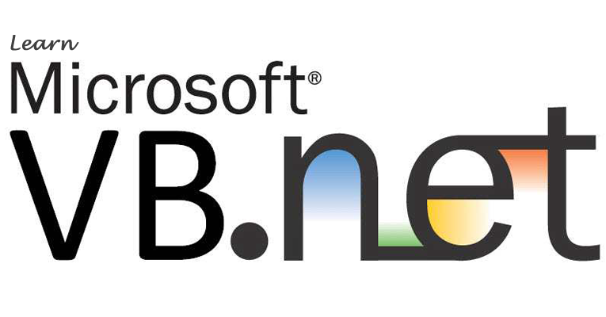

Visual Basic Dili nedir?
Visual Basic Dili Nedir?
Visual Basic, Microsoft tarafından geliştirilen bir programlama dilidir. Her ne kadar büyük ölçüde Microsoft Visual Studio. NET’in bir parçası olarak gelen Microsoft Visual Basic .NET ile değiştirilmiş olmasına rağmen, güçlü bir takip vardır. Asıl dilin kendisi 1991’den 1998’e kadar sürdü ve bir sonraki on yıl boyunca destek sona erdi.
Visual Basic’in temel ilkeleri, 1980’lerde bilgisayar programcılarının temelini oluşturan eski BASIC dili üzerine inşa edildi. Alan Cooper, 1980’lerin sonlarında bir sürükle ve bırak arayüzü geliştirmişti ve Microsoft, kendisinden ve firmasından Tripod’dan kavramı bir form oluşturma uygulamasında geliştirmesini istemek için ona yaklaştı. O sırada Ruby olarak bilinen bu projeyi teslim ettiklerinde, Microsoft, yeni dili oluşturarak BASIC programlama diliyle birleştirmeye karar verdi.

Gelecek yedi yıl boyunca, Visual Basic sağlam bir programlama dili olan 6.0 sürümüne kadar birçok yinelemeden geçecekti. Microsoft sonunda dili desteklemekten vazgeçse de, çalışma süreleri sonraki tüm Microsoft işletim sistemleri tarafından desteklense de. Resmi desteğin olmamasına rağmen, Visual Basic, birbirlerini desteklemek ve dilde yeni insanlara yardım etmek için çalışan etkin bir programcı topluluğuna sahiptir. 2001’de, Visual Basic üç yıldan beri geliştirme dışı kaldıktan sonra, Microsoft bunu .NET çerçevesi üzerine kurulu bir sürümle değiştirdi. Pek çok olumlu özelliğe rağmen, yeni sürümün Visual Basic’in eski sürümüyle geriye dönük olarak tam uyumlu olması için tasarlanmamış olması bir takım sorunlara neden oldu. Sonuçta, birçok programcı eski dilde kalırken, diğerleri yenisine geçerken, geliştirici topluluğunda önemli bir sürtüşmeye yol açtı.
Birçok kişi Visual Basic’i ideal bir başlangıç programlama dili olarak bulur, çünkü grafik özellikleri bazı kullanıcılar için daha sezgisel hale getirir. Temel olarak, hala BASIC diline güveniyor, ancak kullanımı kolay bir arayüz vererek programlamanın daha zor kısımlarından bazılarını çıkartıyor. Genelde, bir insanın C ++ gibi bir dile geçmeden önce öğrendiği ilk programlama dili olacaktır. Bununla birlikte, bazen, bir programcı karmaşık programlar oluşturmak için bile olsa, temel programlama dili olarak kalması için Visual Basic ile yeterince rahat olabilir.

Her türlü program Visual Basic ile oluşturulabilir ve sağlam ve çok yönlü bir ortamdır. Modern .NET dili, birçok çağdaş dilde bulunmayan pek çok özellik içerir ve bu, birçok amaç için idealdir. 2005 yılı itibariyle, dil, onu daha güçlü .NET dilleri ile aynı çizgiye getirmeyi amaçlayan bazı önemli revizyonlar gördü. Bunlara kısmi sınıflar, null edilebilir tipler ve jenerikler eklenmiştir. 2008 ve Visual Basic 9.0’dan itibaren, dil, adsız türler, XML değişmezleri, tür çıkarımı ve true ise if operatörü içeriyordu.